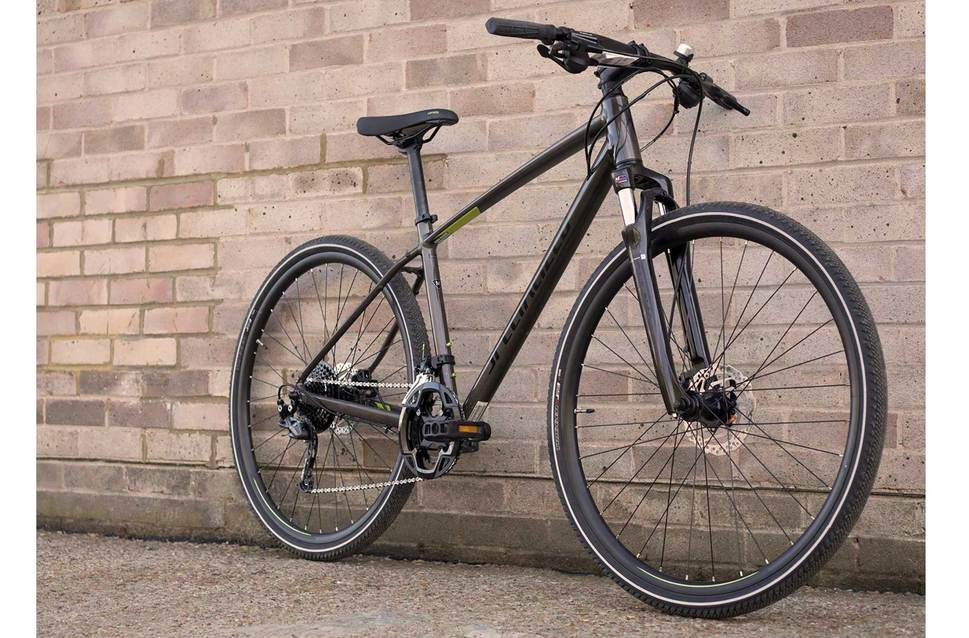
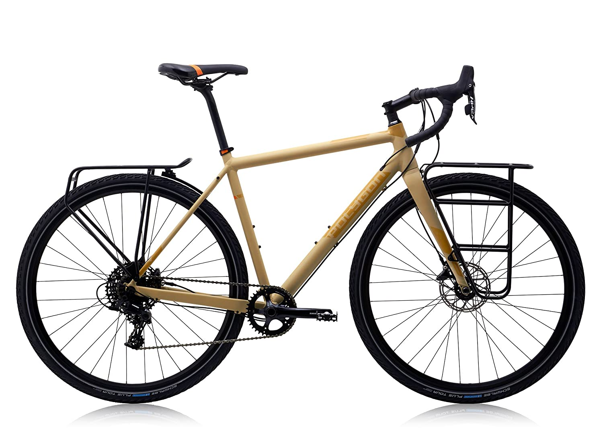
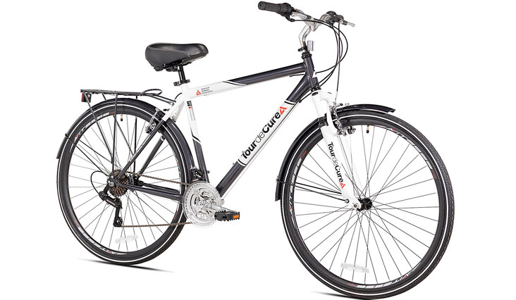

Las bicicletas Híbridas han existido desde hace mucho tiempo, posiblemente sea uno de los tipos de bicicletas mas antiguas que existen,
se les da el nombre de Híbridas ya que estan diseñadas para poder ser utilizadas
en tiferente tipo de terreno, ya que soportan a la perfección
un poco de terraceria y terreno irregular aunque son mas comodas para usarse en ciclovias y caminos asfaltadas y
Así luce una Bicicleta Híbrida:
  Las encontraras en una gran variedad de modelos, es muy comun que este tipo de bicicletas sean utilizadas como comuters en grandes ciudaddes
que ofrecen un buen sistema de ciclovias, tambien se utilizan con fines recreativos
para un paseo tranquilo
Volver a página principal